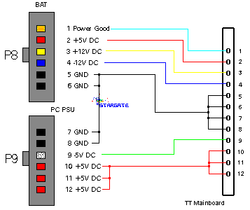

|
|
16.5 TT PSU
Stromanschluß am Atari TT
J100 sollte der Stecker für die Stromversorgung der
TT-Platine sein.
Pin Bezeichnung/Spannung 1 PG (PowerGood) 2 +5 Volt 3 +12 Volt 4 -12 Volt (seriell!) 5 GND 6 GND 7 GND 8 GND 9 -5 Volt 10 +5 Volt Mainboard 11 +5 Volt Mainboard 12 +5 Volt Mainboard
ALLE Spannungen haben GND ! als Bezugspunkt. Multimeter auf
Meßbereich 20VDC einstellen. Rote Prüfspitze ist '+' sofern
am Multimeter richtig gesteckt. Negative Spannungen erhalten im
Display ein vorgestelltes '-' Einfach mal Messen. Fehlen z.B die
negativen Spannungen ist es Essig mit RS232 usw.
 Abbildung 1 - TT Mainboard mit PC Netzteil verbinden
Als erstest Testen wir diese Spannungen, das geht auch wenn das Netzteil NICHT ausgebaut ist. Wenn der Rechner an ist KEINEN Kurzschluß zwischen diesen Pins oder sonstigen Teilen veranstalten! Es ist nicht unbedingt ratsam die Spannungen ohne angeschlossenes
Mainboard zu messen. Einige ältere Netzteile lösen sich in
Rauchschwaden auf (Teile davon) wenn sie im Leerlauf, also ohne Last
betrieben werden.
|
|
|